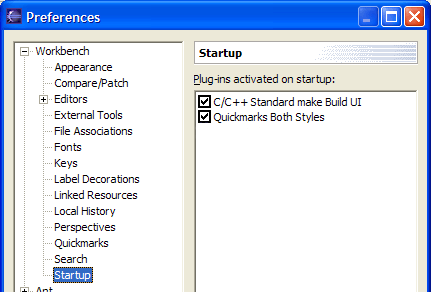
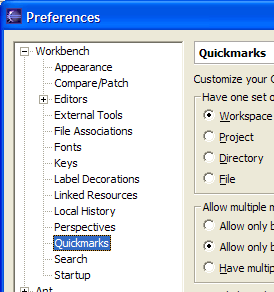

Although the Quickmarks are primarily meant to be used just by keyboard shortcuts they show up in several places in the UI.
Left of the current editor (the marker bar) Quickmarks show up with special icons: the Quickmark number decorated.
With default settings the Quickmarks show up in the overview ruler right to the editor also as little yellow marks (this depends on the markers beeing a 'problemmarker' or 'bookmark', see Changing visibility in views).
Every attempt to set/move/delete/jump to a Quickmark is shown in the statusline with an appropriate message telling you what happened. This message is automatically removed after some time, if you do nothing, and immediately, when you change the current selection (simple cursor movement doesn't count, select some text region, switch editors, activate some view).
Failed attempts are messaged in red and accompanied by a beep. Look at the statusline to see the reason. Failures are usually harmless, e.g. "No Quickmark # to go to ..." or "Can't set Quickmark #: <reason>".
Severe errors are logged and the plugin opens/shows the error log automatically. If this happens to you then please consider a bug report to us.
You can set/move/delete and jump to Quickmarks using the "Navigate" menu, if you prefer. This is also a place to look for the active key bindings, if you changed and have forgotten about them. See also Key binding below.
Notice the 2 'Go to' alternatives for Mark 0. With only one Quickmark 0 set there is no behaviour difference. But you can have multiple Quickmarks with the same number (by accident or by intention, see Handling Multiple Marks). Then the behaviour is to move forward from the current selection to the next existing Quickmark for all 'Go to Mark' actions except for Go to previous Mark 0, which moves backward. Quickmark 0 is also the one used, when this plugin is changed to behave in "M company Style". A last reason for this additional action is, that the default key binding Alt+0 is hidden by the 'Cut to Beginning of Line' action in the 'Emacs' configuration bound to Alt+0 Ctrl+K, so there is an alternate binding available to the experimenting Emacs user.
As delivered the Quickmarks show up as INFO items in the task view. Although this might clutter your task view we consider this a feature: the task view has the option of advanced filtering and sorting it's list, you have an overview of your Quickmarks and can jump to them with the mouse. If you don't like this, you can change it, see Changing visibility in views. But more easily you just might filter out Quickmarks to be not shown in the task view (or even show only Quickmarks, try it). You can't edit or delete a Quickmark from this view by default.
By default the Quickmarks also show up in the bookmarks view. Here you have the option of changing the name of the Quickmark, for instance to add a minor comment (from the context menu of a bookmark >> Properties). The changed description shows up in the task view too. You again can change the plugin, so that the Quickmarks ain't shown in the bookmarks view at all. But having Quickmarks in this view has several advantages: the Quickmarks description is editable and the Quickmark is deletable from within this view. Also this view normally is much less cluttered than the task view.
Be aware that when you rename a Quickmark via this view this will NOT change the Quickmark into a regular bookmark, it remains to be a Quickmark and is still considered as a candidate for jumping and beeing automatically deleted as any other Quickmark. So, don't add important comments via the bookmarks view for a Quickmark! Consider adding a normal bookmark or a task at that location instead.
You can change the default key binding via the Preferences Workbench >> Keys. They are found inside the Navigate section.
Note, that with the default key binding there is a conflict for jumping to Quickmark 0. We've still choosen this binding, as it feels natural, Emacs users possibly are happy with their special "point and mark" feature anyway, or finally might just don't use Quickmark 0 by unbinding "Set Quickmark 0" in their "Emacs" configuration.
You can change the key bindings for this extension. Feel free to do it. Remember, that Eclipse has Emacs style key binding support too, so you can have a prefix key, say Ctrl+M 0 - Ctrl+M 9.
If you prefer 'pure' B company style or M company style, please read the section switching to another style.
If you rebind yourself, would you please consider to tell us: what keys have you choosen and why felt you that to be nessessary?

To have the Quickmarks available in perspectives you already had customized before installing the Quickmarks, you must customize these perspectives again and enable "Quickmarks Both Styles" in the "Other" section.
Perspectives not yet customized have the Quickmarks enabled by default.
In the preference page Workbench >> Startup this plugin is listed and checked by default. This is essential to have the correct Quickmark icons shown left to the editor when Eclipse is started. If you uncheck this, the Quickmarks continue to work correctly, but are shown only with a default icon (a decorated arrow right) in all editors open on workbench startup.

You might want to configure the Quickmark preferences. They are found under the Workbench preferences. See Preference options for a description of the options.

See: